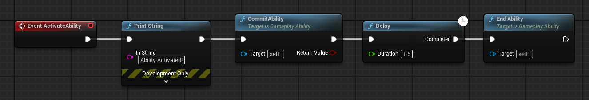
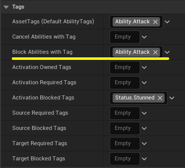
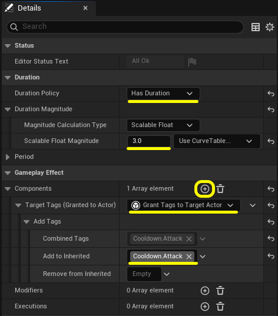
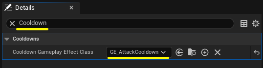
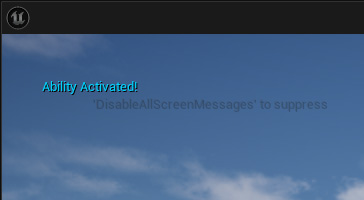

このステップのゴール
BP STEP 04 で使った GA_MyFirstAbility をベースに、2つの制御機能を追加します。
- アビリティの実行中に同じアビリティが重複発動しないよう排他制御を設定する
- Duration GameplayEffect を作成して、クールダウンとして GA_MyFirstAbility に設定する
- Q キーを押してから 3 秒間は再発動できないことを確認する
GA_MyFirstAbility に Delay を加える
排他とクールダウンの効果を確認しやすくするため、まずアビリティに Delay ノードを追加して 「一定時間、アビリティが持続している」状態を作ります。
GA_MyFirstAbility のイベントグラフを開き、
Commit Ability と End Ability の間に
Delay ノードを挿入します。
Duration は 1.5（秒）に設定。
"Ability Activated!" → Commit Ability → Delay
Duration: 1.5 → End Ability

▲ UE 5.5 のスクリーンショットブループリントをコンパイルして保存してください。
Block Abilities with Tag でアビリティを排他にする
BP STEP 04 で AssetTags に Ability.Attack を設定しました。
Block Abilities with Tag に同じ Ability.Attack を追加することで、
「このアビリティが実行中は、同じタグを持つアビリティを発動できない」状態を作ります。
GA_MyFirstAbility の
「Class Defaults（クラスのデフォルト）」 を開き、
詳細パネルの 「Tags」セクションから
Block Abilities with Tag の 「+」を押します。
タグブラウザが開くので Ability.Attack を選択します。
（BP STEP 04 で作成済みのタグなので、新規作成は不要です。）
AssetTags (Default AbilityTags) : Ability.Attack
Block Abilities with Tag : Ability.Attack
Activation Blocked Tags : Status.Stunned
▲ UE 5.5 のスクリーンショットブループリントをコンパイルして保存してください。
GA_MyFirstAbility が実行中（Delay の 1.5 秒間）は、
Ability.Attack タグを持つアビリティの発動がブロックされます。
GA_MyFirstAbility 自身も Ability.Attack タグを持っているため、
実行中に Q キーを押しても追加発動しません。
プレイして Q キーを連打してみてください。 1.5 秒間は「Ability Activated!」が 1 回しか表示されないことを確認できます。
Block Abilities with Tag とは
Block Abilities with Tag は、「このアビリティが実行中に、
指定したタグを持つ他のアビリティの発動をブロックする」設定です。
BP STEP 04 で学んだ Activation Blocked Tags と混同しやすいので整理します。
| 設定項目 | 何をブロックするか |
|---|---|
| Block Abilities with Tag | このアビリティが実行中、指定タグを持つ他のアビリティをブロックする |
| Activation Blocked Tags | ASC に指定タグが存在する間、このアビリティ自身の発動をブロックする |
今回は AssetTags と Block Abilities with Tag の両方に
同じ Ability.Attack を設定しました。
「実行中は自分自身も再発動できない」という排他制御になります。
例えば GA_Attack（AssetTags: Ability.Attack）と
GA_Heal（AssetTags: Ability.Heal）があるとき、
GA_Attack の Block Abilities with Tag: Ability.Heal を設定すれば
「攻撃中は回復できない」という制御もタグ1つで実現できます。
クールダウン用 GameplayEffect を作る
排他制御に加えて、アビリティが終了してからも一定時間は発動できない クールダウンを実装します。
クールダウンには GameplayEffect を使います。 GameplayEffect は GAS の効果を表現するアセットです。 今回は「クールダウン中」という状態を 3 秒間維持するためだけに使います。
Content Browser（コンテンツブラウザ）で右クリック →
「Blueprint Class（ブループリントクラス）」を選択。
親クラスの検索欄に 「GameplayEffect」 と入力して選択し、
名前を GE_AttackCooldown にして作成します。
GE_AttackCooldown を開き、
「Class Defaults（クラスのデフォルト）」を選択。
詳細パネルの 「Duration」セクションで以下を設定します。
Duration Policy : Has Duration
Scalable Float Magnitude : 3.0
Duration Policy を Has Duration に変更すると
Duration Magnitude の入力欄が現れます。
Magnitude Calculation Type が Scalable Float になっていることを確認し、
Scalable Float Magnitude に 3.0 を入力します。
次に 「Gameplay Effect」セクションの Components の 「+」をクリックします。 ドロップダウンから 「Grant Tags to Target Actor」を選択します。
「Target Tags (Granted to Actor)」コンポーネントが追加されます。
「Add Tags」の中の
「Add to Inherited」の欄に
Cooldown.Attack という新しいタグを作成して追加します。
「この GE が ASC に付与されている間、指定したタグを ASC に付与し続ける」設定です（UE 5.3 以降のコンポーネント方式）。
GE が有効な 3 秒間は Cooldown.Attack タグが ASC に存在し、
GE が切れると同時に自動で外れます。

▲ UE 5.5 のスクリーンショットブループリントをコンパイルして保存してください。
GA_MyFirstAbility の 「Class Defaults（クラスのデフォルト）」を開き、
詳細パネルで Cooldown と検索します。
「Cooldowns」セクションの
Cooldown Gameplay Effect Class に
GE_AttackCooldown を設定します。

▲ UE 5.5 のスクリーンショットブループリントをコンパイルして保存してください。
Commit Ability を呼ぶと GE_AttackCooldown（3 秒）が ASC に付与されます。
GE の「Grant Tags to Target Actor」コンポーネントが Cooldown.Attack タグを ASC に与え、
TryActivateAbilityByClass はその GE が付与している間、発動チェックで失敗します。
3 秒後に GE が切れるとタグも外れ、再び発動できるようになります。
動作確認
プレイを開始して以下の順で操作します。
- Q キーを押す → 「Ability Activated!」が表示される

▲ UE 5.5 のスクリーンショット- 1.5 秒以内に Q キーを押す → 何も表示されない（実行中・排他によるブロック）
- 1.5 秒後（Delay 終了）に Q キーを押す → 何も表示されない（クールダウン中・残り 1.5 秒）
- 最初の Q から 3 秒以上経ってから Q を押す → 再び「Ability Activated!」が表示される
0〜1.5 秒：Block Abilities with Tag によるブロック（アビリティ実行中）
1.5〜3 秒：GE_AttackCooldown によるブロック（アビリティ終了後もクールダウン GE が継続）
3 秒以降：クールダウン GE が自動解除され、再び発動可能
Duration GameplayEffect とは
GameplayEffect は本来 C++ 編で本格的に扱うテーマですが、 クールダウン管理に限っては Blueprint だけで使えます。 Attribute（HP など）の変更には C++ の AttributeSet が必要ですが、 今回のように「タグを一定時間付与する」用途であれば C++ 不要です。
GameplayEffect には3種類の Duration Policy があります。
| Duration Policy | 効果の持続 | 主な用途 |
|---|---|---|
| Instant | 一瞬で適用・即終了 | ダメージ・即時回復（C++ 編で学ぶ AttributeSet が必要） |
| Has Duration | 指定時間後に自動解除 | クールダウン・時間制限のバフ・デバフ |
| Infinite | 明示的に解除するまで持続 | パッシブバフ・永続的な状態変化 |
BP STEP 04 では Add Loose Gameplay Tags でタグを手動管理しましたが、
GameplayEffect に「付与タグ」を設定すれば、GE が有効な間だけタグが自動付与され、
GE 解除と同時にタグも消えます。
Attribute（HP・ダメージなど）を変化させるには C++ 編で学ぶ AttributeSet が必要ですが、
タグの付与・解除と時間管理は Blueprint の GameplayEffect だけで行えます。
うまくいかないときの確認ポイント
- 排他が効かない →
Block Abilities with TagにAbility.Attackが設定されているか - 排他が効かない →
AssetTags (Default AbilityTags)にAbility.Attackが設定されているか（BP STEP 04 で設定済みのはず） - 排他が効かない →
DelayノードがCommit AbilityとEnd Abilityの間に正しく繋がっているか - クールダウンが効かない →
Cooldown Gameplay Effect ClassにGE_AttackCooldownが設定されているか - クールダウンが効かない →
GE_AttackCooldownのDuration PolicyがHas Durationになっているか - すべてのブループリントをコンパイル・保存済みか
このチュートリアルは UE 5.5 で動作確認しています。別バージョンをお使いの場合は UE 5.5 で試してみてください。
まとめ
Block Abilities with Tag と Duration GameplayEffect を組み合わせることで、
「実行中の重複発動防止」と「発動後のクールダウン」の両方を、
タグとアセットだけで制御できます。